Overview
The Hotel Management System will be split up into two applications, a server and a client. This is to allow the system to operate on a network.
The client application will consist of a graphical user interface that will control event-driven message routines capable of sending objects over the network to the server application and receiving replies.
The server application will consist of the data store for the system and will be capable of both sending and receiving data across the network.
Collaboration Diagrams
The collaboration diagrams for the system can be split up into categories relating to their function.
"Create Object" Diagrams
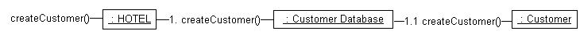
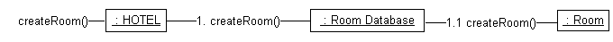
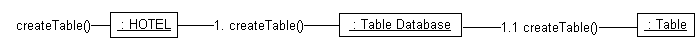
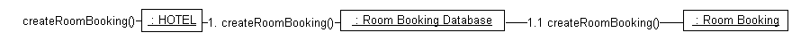
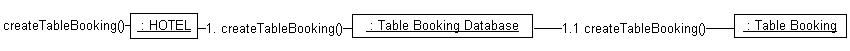
The system uses a similar design to create all of the objects it needs since each class has its own constructor function. The main class only needs to call the "new" command each time.
"Update Object" Diagrams
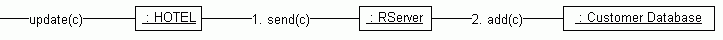
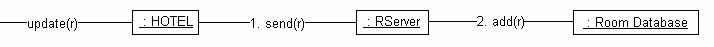
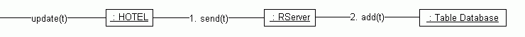
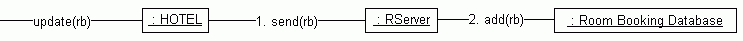
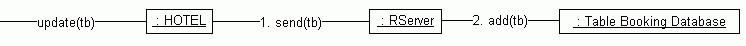
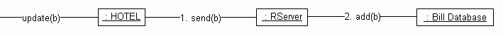
The above collaboration diagrams represent how each of the objects within the system are updated.
The send() command between the Hotel and Rserver classes represents the data (object) being sent over the network from the client application to the server application.
The add() command can be used to update the object since the data will be referenced by a unique key (by means of a hash table). This means that adding an object into a database where it already exists will simply overwrite the existing copy.
"Find Object" Diagrams
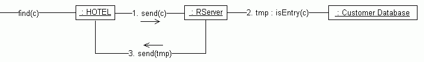
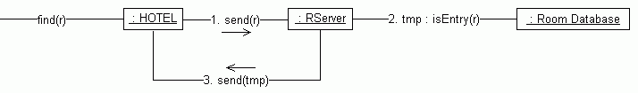
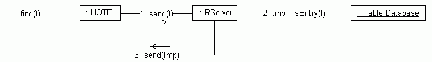
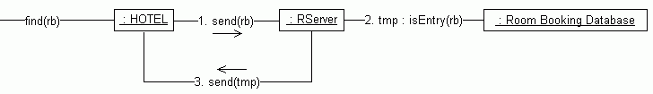
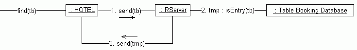
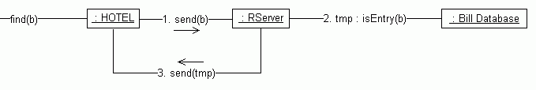
The above diagrams represent how the system looks up an object to see if it is one of the databases. The two send() commands are used to send the data over the network from the client to the server and vice-versa.
All of these collaboration diagrams represent the main functions that can be initiated by the graphical user interface buttons and menu commands.